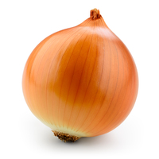
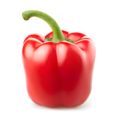
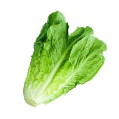

Vegetables

Onion
Amount: 20 pcs.
Price: 100 NOK
Sweet onions have a greater water and sugar content than cooking onions. This
makes them sweeter and milder tasting,
but reduces their shelf life. Sweet onions can be stored refrigerated; they have a
shelf life of around 1 month. Irrespective of type,
any cut pieces of onion are best tightly wrapped, stored away from other produce,
and used within two to three days.

Bell Pepper
Amount: 25 pcs.
Price: 120 NOK
Paprika is used as an ingredient in numerous dishes throughout the world. It is
principally used to season and color rices, stews, and soups,
such as goulash, and in the preparation of sausages, mixed with meats and other
spices. In the United States, paprika is frequently sprinkled raw
on foods as a garnish, but the flavor is more effectively brought out by heating it
in oil.

Lettuce
Amount: 10 pcs.
Price: 80 NOK
Depending on the variety, lettuce is an excellent source (20% of the Daily Value,
DV, or higher) of vitamin K (97% DV) and vitamin A
(21% DV) (table), with higher concentrations of the provitamin A compound,
beta-carotene, found in darker green lettuces, such as romaine